9. DataBase¶
9.1. データベースの種類¶
CAPの定理に従ってDBを分類すると効果的
CAPの定理：「広域な環境で分散してデータを保存する場合以下の３つの特性のうち、２つまでしか同時に満たすことができない」
C(一貫性)：あるデータを読み込みした時にすべてのノードで最新のものを返す
A(可用性)：システムを構成するノードに障害が発生しても常に読み込み書き込みができる
P(ネットワーク分断体制)：システムを構成するノード間の通信が分断されても機能が継続される
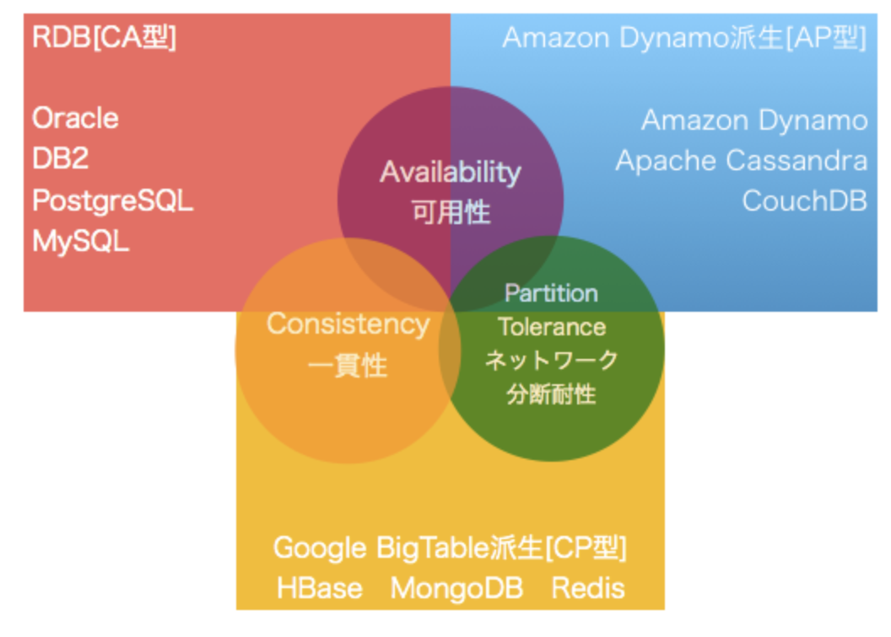
CAPの定理から各DBサービスをCA型、AP型、CP型に分類することができ、それぞれ代表的なRDS・DynamoDB・Elastic Cacheについて説明する。
9.1.1. CA型¶
データの一貫性と可用性を高める構成で構成で、RDBが相当する
複雑な検索や厳密なトランザクションに対応できる。
複数のAZに分散して、DBを構成して、同期をとることで一貫性と可用性を満たそうとする。 ネットワークが分散されると一貫性と可用性が満たせなくなる。
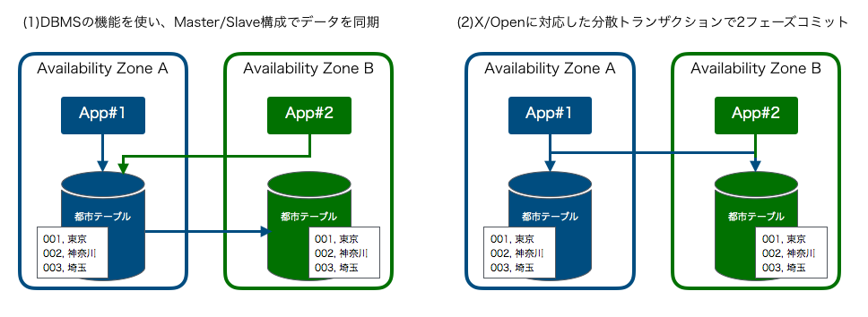
9.1.2. CP型¶
一貫性とネットワーク分断耐性を高める構成で、MongoDBやElastic CacheのRedisが該当する
高速処理が可能
データを複数のAZに分けて保存するシャーディングを利用している。 シャーディングでは、１つのノードが機能しなくても、そのノードに配置されたデータが利用できなくなるが、DB全体が利用できなくなることはない。 ただし、ノードが増えることで故障確率が上昇し、読み込みと書き込みが制限される可能性がある。
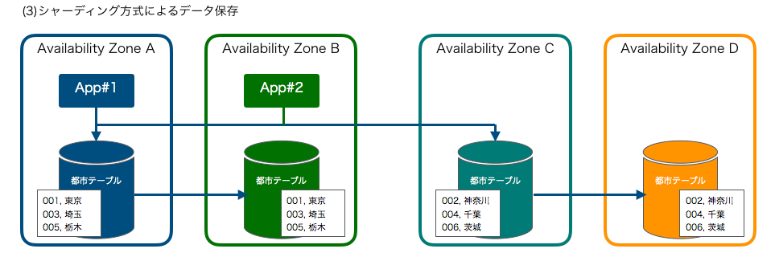
9.1.3. AP型¶
可用性とネットワーク分断耐性を高める構成で、DynamoDBが該当する
障害が発生しないことを利用した多数アプリやIoTからのアクセスなどへの対応が可能。
複数のAZにDBを配置し、全体で1つのDBとして動作する。 1つのノードやネットワークに障害が起きてもデータが損なわれないように各ノードにデータを分散して配置する。 単一障害点がないので、どのノードからでもデータ更新の可能性がある。 ノードの故障や通信エラーにより、複数ノード間で生合成が取れない場合がある。 整合性が取れない場合に備えて、Read Repair機能やQuorum(多数決)などの機能が準備されている。
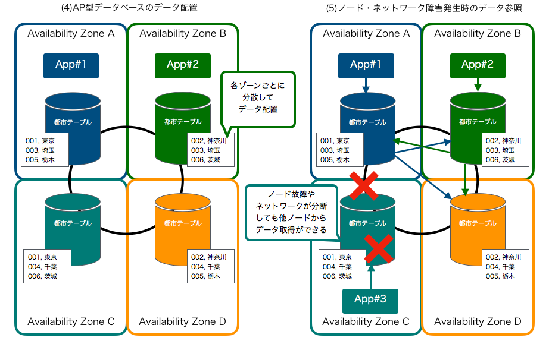
9.2. RDS¶
構築や運用を容易にするRDBサービスで、CA型のデータベースサービスとなる
以下のエンジンがサポートされている
MySQL
PostgreSQL
MariaDB
SQL Server
Oracle Database
Aurora
9.2.1. RDSの特徴¶
マネージドなサービスであり、アプリケーション最適化以外の部分についてはAWSが管理しており、以下の特徴を持つ。
9.2.1.1. 拡張性¶
スケールアップやスケールダウンをインスタンスタイプを指定することで容易に実行可能。 ストレージについてもDBを停止することなく、増加させることができる。
9.2.1.2. 高可用性¶
稼働中のシステムがダウンした際に、待機系のシステムに自動で切り替える自動フェイルオーバーや、DBの構築時にMulti-AZ配置にすることができる。
9.2.1.3. DBバックアップ¶
自動バックアップ機能が準備されており、次の２つのデータをS3に保存する
1日1回、バックアップウィンドウで指定した時間のスナップショット
5分感覚のトランザクション
9.2.1.4. パッチ適用¶
DBやOSのパッチは自動で行われる
9.2.2. リードレプリカ¶
パフォーマンス向上のために、プライマリとなるDBを非同期で複製する機能。
最大で5台のリードレプリカを作成して、負荷分散することができるが、非同期であるので、常に最新のデータが返却去るとは限らない点に注意 また、エンドポイントもプライマリと異なっているので、アプリ側で書き込みと読み込みで異なるエンドポイントを指定する必要がある。
災害対策でベルのリージョンにリードレプリカを作成することができる。
9.2.3. DBのバックアップ¶
RDSには定期実行のバックアップ機能がある。 スナップショット機能で自動でLambdaが実行されてバックアップが作成される。保存期間はデフォルトで7日間、最大で35日。
これを超える期間のバックアップが必要な場合はユーザー側の作り込みが必要
9.3. Aurora¶
RDSのデータベースエンジンの一つで、クラウドの普及に伴ってAmazonが内部のアーキテクチャを再設計したデータベース MySQLとPostgreSQL互換のバージョンが提供されている。
RDBの特性である一貫性をもち、リードレプリカといった特徴とQuorumに基づく結果整合性でデータを分散して保存しているため可用性を高めている。 あるAZで障害が発生した場合にも、マルチAZでのスタンバイベースを作成していなくても、DBを継続して利用することができる。
書き込み用のクラスターエンドポイントと読み込み用の読み込みエンドポイントがある。
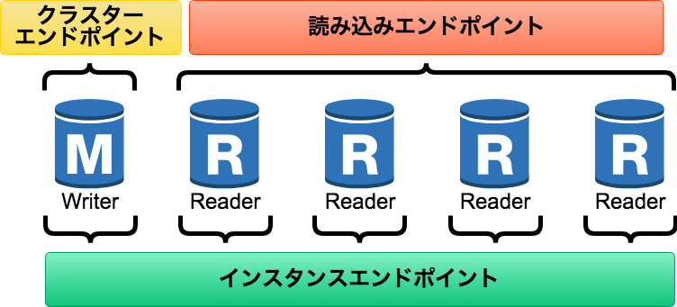
9.3.1. カスタムエンドポイント¶
先ほど説明したように、役割ごとにエンドポイントがあったが、インスタンスの組み合わせを自由に行えるカスタムエンドポイントが追加された。
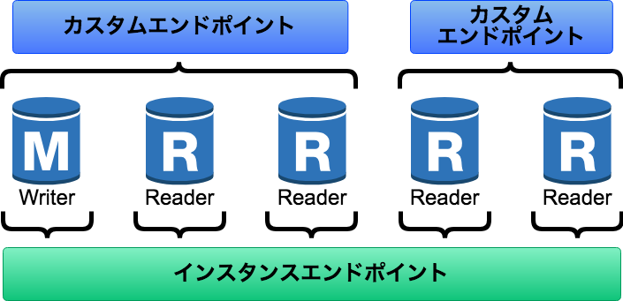
これによって、重い処理のバッチ処理を捌くDBインスタンスを使い分けることができる。
カスタムエンドポイントがない場合
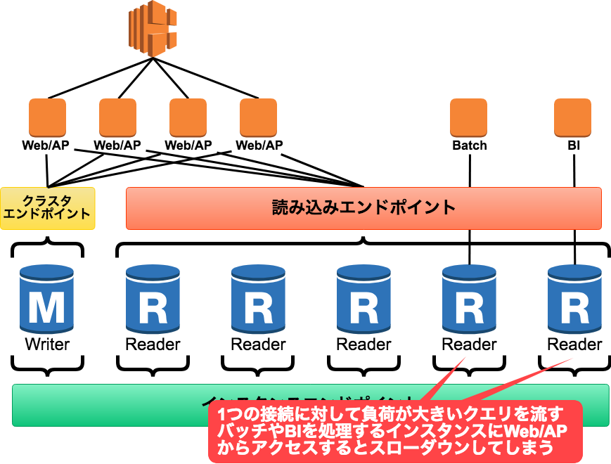
カスタムエンドポイントがある場合
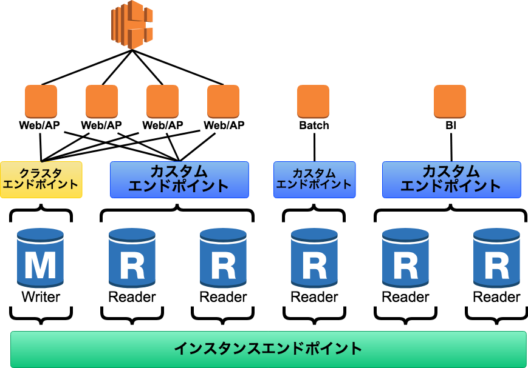
9.3.2. Aurora Serverless¶
DBサーバーをプロ美女人戯して管理するのではなくて、キャパシティユニットを指定して管理する。 不定期、断続的、予測不可能なワークロードに対して効率良く利用することができる。
9.4. Elastic Cache¶
AWSが提供するセットアップ、運用、拡張が良いなマネージドキャッシュサービス
RDBに保存してある、マスターデータをキャッシュして、処理を高速化したり、複数Appサーバーでセッション情報を共有するために利用される。
9.4.1. キャッシュ戦略¶
遅延書き込み戦略
必要な時にキャッシュを読み込む書き込みスルー戦略
データが書き込まれると、キャッシュを更新するTTLの追加 一定時間でデータを失効させて、古いデータを残すのを避ける
9.4.2. Memcached¶
マスターデータなどのマルチスレッドでアクセス可能な共通データのキャッシュ用途で利用する（名前の通りメモリ的な役割）
インメモリ型のキーバリューストアで、シンプルなキーバリューストアでデータをキャッシュして低レイテンシーでデータ参照するためといった目的で利用する。
レプリケーションといった冗長化の効果がない点に注意（名前の通りメモリ的な役割）
9.4.3. 基本的な挙動¶
複数AZに跨った、クラスターを構成する
データはハッシュアルゴリズムに従って格納するデータが決まる
App側はElastic Cache Clientを利用して、データが格納されているノードをMemcachedのエンドポイントに問い合わせる
キャッシュにデータがあればデータを取得する
※Elastic Cache Clientが提供されているのが、C#,Java,PHPなので、それ以外はApp側で問い合わせ先のノードを計算する必要がある。
9.4.4. Redis¶
セッションデータを管理したりするユーザーごとに異なる動的なデータのキャッシュ用途で利用する。
データをいくつかのグループで分割して持つシャードを利用して分散処理して、パフォーマンスや可用性を高める
高機能なインメモリ型のキーバリューストアで、CP型のデータベースとなる。
Redisの構成と用語は以下の通り
ノード：データを保持する単位シャード：ノードの集合体クラスタ：シャードの集合体
Redisでは、シャードにデータを分散保存（シャーディング）することでパフォーマンスと可用性を高めている。 シャーディングを利用するか否かをクラスターモードの設定が可能。
9.4.4.1. クラスタモード無効¶
クラスターモードが無効だとシャードが１つとなる。 エンドポイントは書き込みと読み取り用途のエンドポイントが提供される。
データを保存しているプライマリノードとリードレプリカを配置して、負荷分散をする。 プライマリノードとリードレプリカの同期は非同期に行われている
障害時は、リードレプリカがプライマリーに昇格する。
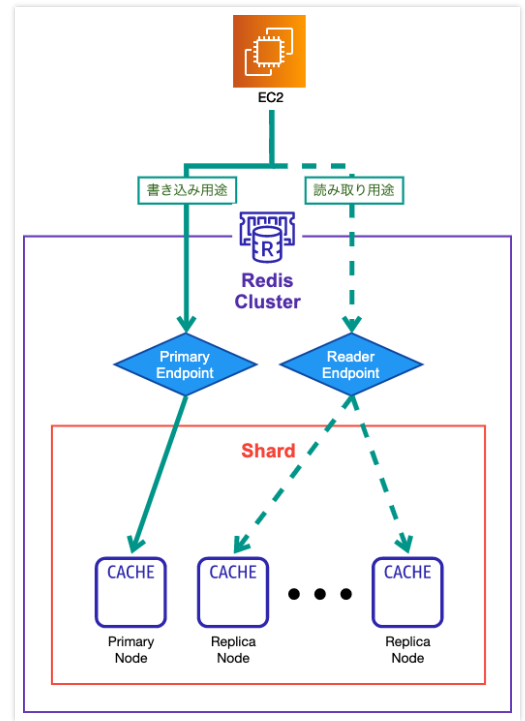
9.4.4.2. クラスタモード有効¶
キャッシュデータ量が多ければ、クラスターモードを有効化することを考えた方が良い。 注意点は、可用性には影響しないことと、費用がかなり高くつく点
クラスターモードが有効だとシャードは1-15で設定可能。エンドポイントは設定エンドポイントのみが提供される。 キーのハッシュ値（スロット）に応じてシャーディングし、シャードを跨いでプライマリとリードレプリカについても作成する。
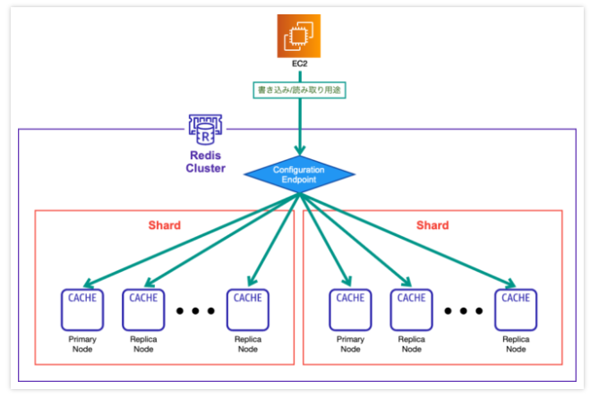
9.5. Dynamo DB¶
AP型のデータベースの代表例で、クラウドならではの水平スケーラビリティに優れており、大規模分散処理構成のユースケースが得意
水平スケーラビリティとは、リソースの数を増やして、システム全体のパフォーマンスを高める手法で、性能向上は垂直スケーラビリティと呼ぶ。
リージョン単位でDBが構成され、3箇所の異なるAZにデータがレプリケーションされる。 単一障害点がないのが特徴。
DynamoDBはNoSQLデータベースサービスで、項目・属性の定義が不要なスキーマレスのテーブル構成。 格納するデータの属性が項目ごとに異なって問題ないなどかなり自由度高くデータを格納できる。
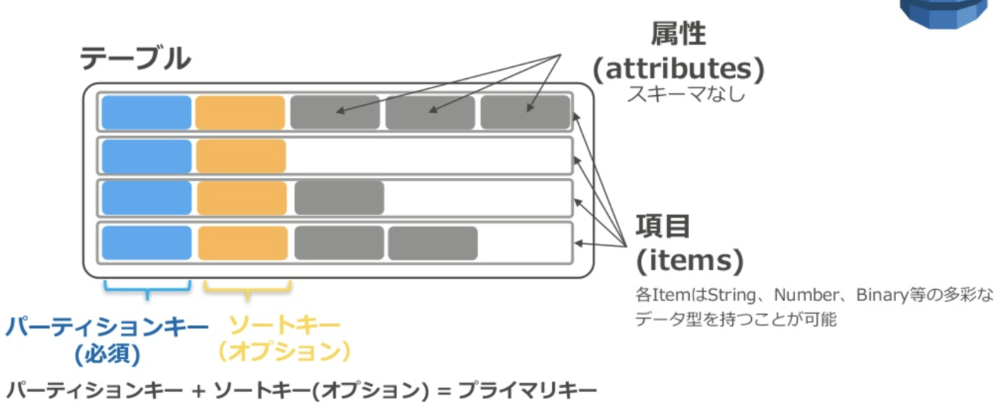
9.5.1. データとキー¶
DynamoDBではConsistent Hashingというアルゴリズムに基づいて、親キー（パーティションキー）をハッシュ化して、配置するノード決定する。
さらに、ノード内での順序は子キー（ソートキー）が決めることができるが、ソートキーの設定は任意
9.5.1.1. ローカルセカンダリインデックス(LSI)¶
Sort kye以外に絞り込み検索を行うkeyを持つことができる。 Partition keyが同一で他のAttributesで検索をすることができる。
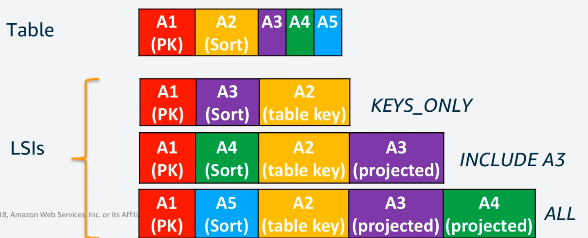 LSIを設定しておくことで、A1をPrimary key、A3をSort kyeとしたテーブルを作成し、検索することが可能となる。
LSIは、テーブル作成前に設定しておく必要がある。
9.5.1.2. グローバルセカンダリインデックス(GSI)¶
Prrtition key属性の代わりとなるkeyを指定することができる。
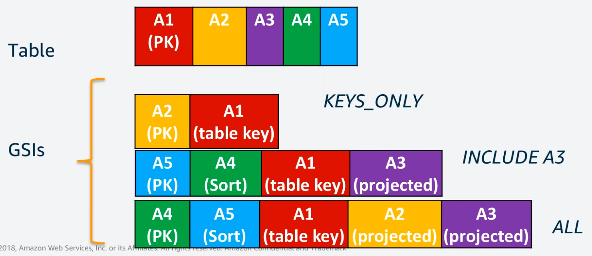 GSIを設定しておくことで、A2をPrimary Keyとしてテーブルを作成することができる。
GSIは、既存のテーブルに追加する形で設定することができる。
9.5.2. DynamoDBのクエリ¶
CLIからコマンドを実行することで、データを取得することができる。
データの読み込みでは、GetItemやScan などのオペレーションを使用する。
デフォルトでは、すべての属性(列)を返すが--projection-expressionを利用すると、特定の属性(列)のみが返却される。
クエリの例
aws dynamodb get-item \
--table-name ProductCatalog \
--key '{"Id":{"N":"123"}}' \
--projection-expression "Safety.Warning"
9.5.3. DynamoDBのクエリの種類¶
BatchWriteItem: 1つのテーブルから最大100データを取得
Query: 特定のパーティションキーを持つ項目を全て取り出す
Scan: 指定されたテーブルやイン出っっくすの全ての項目を取り出す
9.5.3.1. 条件付きクエリ¶
更新や書き込みに対して、条件を付与することができる
9.5.3.2. 返り値の設定¶
ReturnConsumerCapacityパラメータでオプションを指定できる
TOTAL: 消費された書き込みキャパシティユニットの総数
INDEXES: 消費されたCWUsの合計数と影響を受けたテーブルおよびセカンダリインデックスも返す
NONE: 何も返さない
9.5.4. DynamoDBの注意点¶
RDBでは当然のようにできていたことができない。 テーブル間の結合や不軸問い合わせができないことやAND飲みが論理演算子で利用可能など・・・ Dynamoにはできないことをきちんと把握してから利用する必要がある。
9.5.5. 課金体系¶
DynamoDBの課金体系には以下の２つがある
オンデマンドキャパシティモード：リクエスト数に応じて課金（動的）
プロビジョンモード：テーブル単位で読み書きのパフォーマンスをスループットとして定義する。
読み込みと書き込みのキャパシティユニットをそれぞれWCUs(Write Capacity Units)とRCUs（Read Capacity Units)と呼ぶ。 1秒間にどれだけ読み込みするか（RCUs（とどれだけ書き込みするか（WCUs）を算出して、設定する。
9.5.5.1. RCUs¶
1秒当たりの読み込み項目数 * 項目サイズ(4KBまでを1ブロック)
結果整合性読み込みは雑に読み込むのでスループット2倍
トランザクション読み込みはしっかり読み込むのでスループット半減
9.5.5.2. WCUs¶
1秒当たりの書き込み項目数 ＊ 項目サイズ（1KBまでを１ブロック）
トランザクション書き込み（強い整合性）の場合はしっかり書き込むのでスループット半分
9.5.5.3. DynamoDBのオートスケーリング¶
負荷に応じて、RCUsやWCUsのスループットを上下させることが可能
9.5.6. 読み込み書き込みの設定¶
GetItemではデフォルトで結果生合成の読み取りを提供している。
アプリケーションで強い生合成のある読み取りが必要な場合はConsistentReadパラメータをTrueにする。
9.5.7. TTL(Time To Line)¶
項目に対して有効期限を設定することができ、指定されたタイムスタンプの日時にWCUsを利用せずに削除することができる。
9.5.8. DAX(DynamoDB Accelarator)¶
VPC内でキャッシュクラスタを構築して、DynamoDBへの高速アクセスを可能とするキャッシュサービス。
リアルタイム入札やソーシャルゲームなどのユースケースに適している。
9.5.9. DynamoDB Stream/Trigger¶
テーブル内で項目の変更に関するデータを記録する機能
データが作成・更新・削除されたときに項目のPKと変更前後のセータがストリームレコードとして書き込まれる。
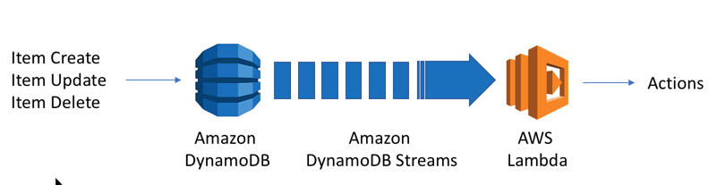
9.5.9.1. DynamoDB Streamの中身¶
DynamoDBテーブル内の項目レベルの変更を時系列シーケンスとなっており、24時間ログを溜め込む。 StreamViewTypeを指定することで、書き込まれる情報を決定することができる
KEYS_ONLY: 変更されたアイテムのキー属性のみ
NEW_IMAGE: 変更後のアイテム全体
OLD_IMAGE: 変更されるアイテム全体
NEW_AND_OLD_IMAGES: 変更前後のアイテム情報
9.5.9.2. DynamoDB Streamの統合¶
LambdaやKinesisと統合されており、StreamAPIを使って、ポーリングを行なって変更を検知すると処理を実行できる（DynamoDB Trigger) Kinesisと連携する場合は、kinesisアダプターを使用して、アプリ側でストリームを消費する。
9.5.10. アトミックカウンター¶
書き込みリクエストを妨害することなく、数値をカウントアップ・ダウンすることができる機能。 UpDateItemと組み合わせて利用することで、更新した回数などをカウントできるが、冪等性がないことに注意。
9.5.11. DynamoDB トランザクション¶
複数の処理をひとまとめにして行うので、同じDBを同時に変更するといった可能性がある時に不整合を防ぐことができる。
処理をまとめて、１つのオールオアナッシングのTransacWriteItemsとTransacGetItemsオペレーションとして送信可能。
9.6. エンドポイント整理¶
RDS
読み取り：リードレプリカエンドポイント
書き込み：DBエンドポイント
Aurora
読み取り：読み込みエンドポイント
書き込み：クラスターエンドポイント
ElasticCache(Redis:クラスターオフ)
読み取り：読み込みエンドポイント
書き込み：Primaryエンドポイント
ElasticCache(Redis:クラスターオン)
読み取り：設定エンドポイント
書き込み：設定エンドポイント